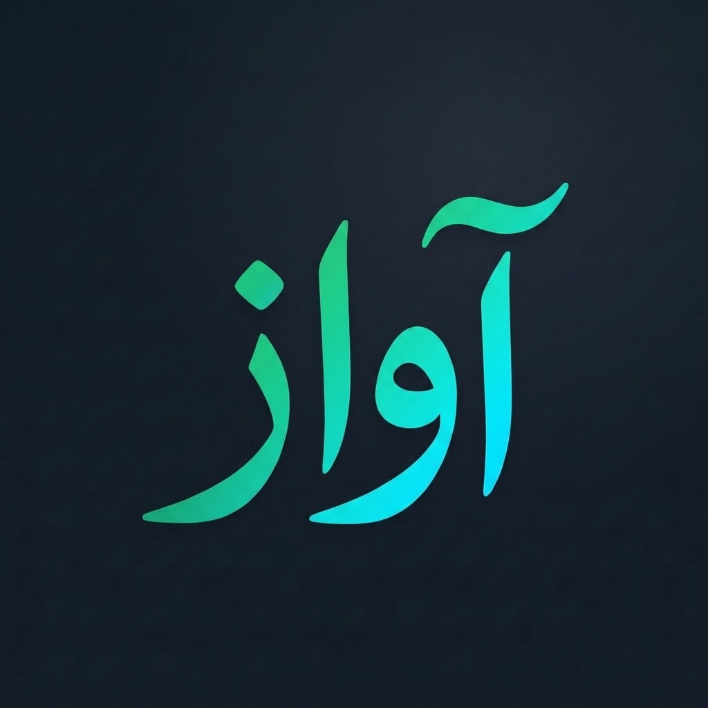
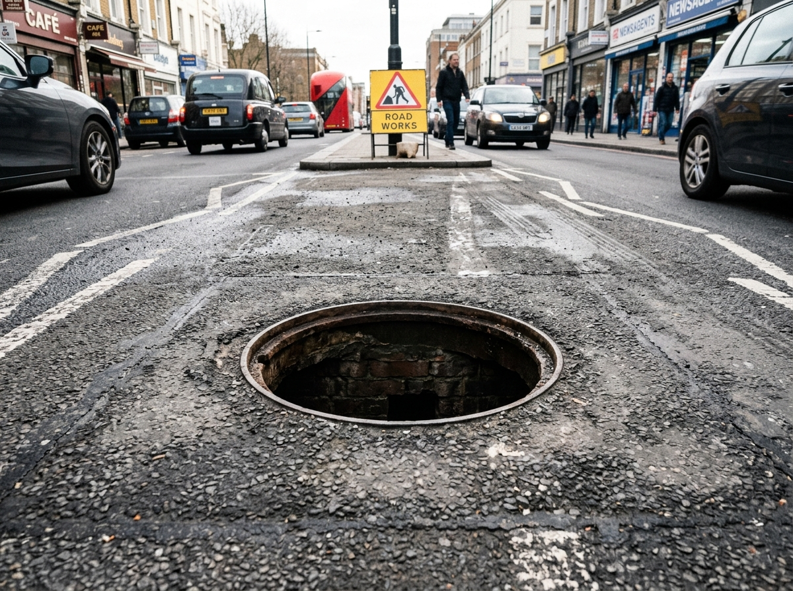
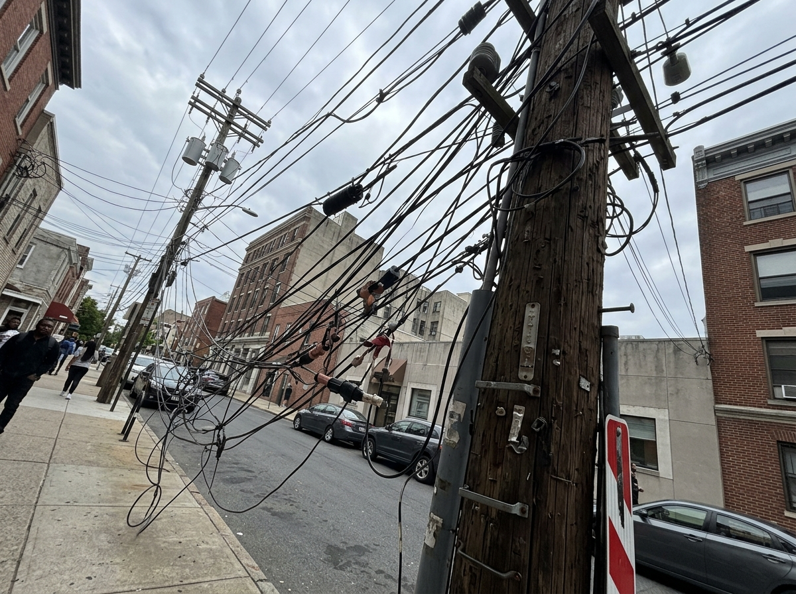
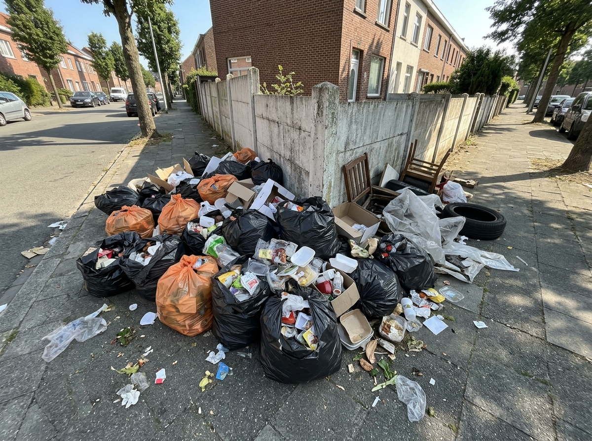
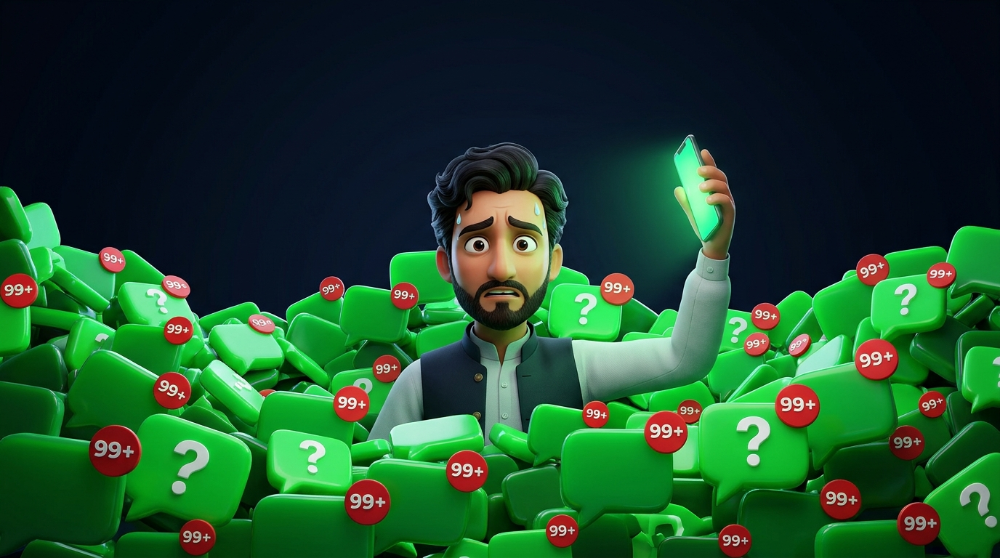
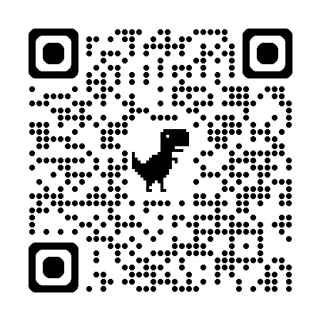
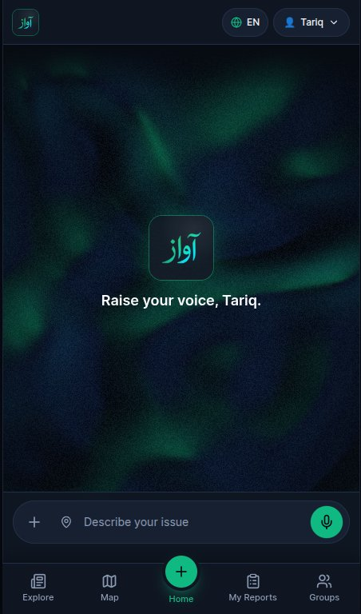
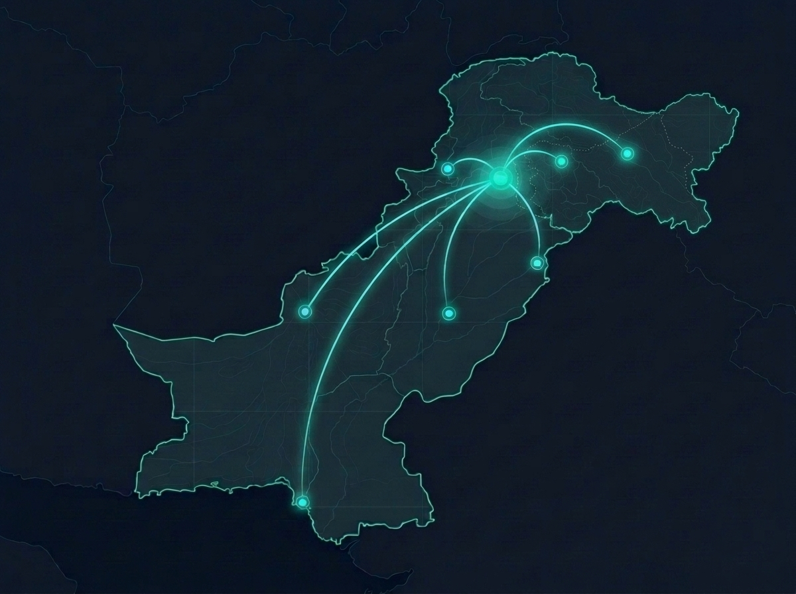

Awaaz آواز
AI Civic Governance Platform
Track 5 – Urdu & Regional Tech

01 • The Problem

27 Open Manhole Deaths
Karachi alone in 2025 — including 22+ children.
Source: The Express Tribune (2025)

35 Electrocutions
Killed in one Karachi monsoon (19 utility failures).
Source: NEPRA / The Express Tribune

30–40% Uncollected
Urban waste left on streets, choking drains & worsening floods.
Source: SSWMB / The Express Tribune
02 • Why Current Systems Fail
Fake Closures
~99% Closed on Paper
6M+ PCP complaints marked “resolved” with zero visual proof.
Source: Pakistan Citizen Portal Reports

0 Tracking
Buried in WhatsApp
No GPS pins, no duplicate merging, no follow-up.
Sifarish
Connections Over Urgency
Who you know decides what gets fixed.
03 • Awaaz App
One AI-powered civic loop connecting three portals:
1
Citizen — Urdu voice intake & sign-off
2
Field Worker — AI Before/After repair proof
3
Mayor Desk — Civic Health & payout freezes

Try It Live
try-awaaz.vercel.app

04 • System Architecture
05 • Nationwide Scale
From Islamabad pilot to every city in Pakistan.
Now
Islamabad Pilot — CDA, IESCO, WASA, SNGPL
Next
Provincial Capitals & Metros
Scale
Every Municipal Body
